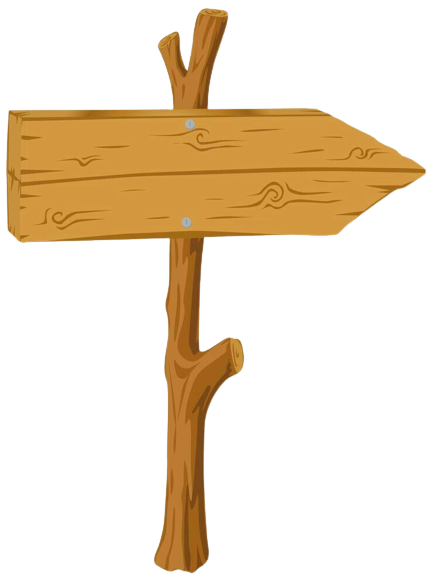
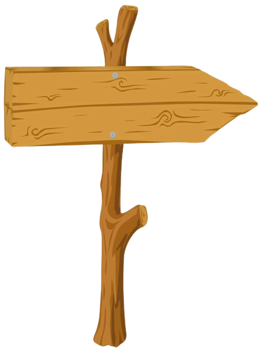

Lumba-Lumba
Lumba-lumba adalah mamalia laut yang terkenal dengan kecerdasan dan kemampuan berenang yang luar biasa. Mereka memiliki tubuh aerodinamis dengan kulit halus dan dilapisi lemak untuk menjaga suhu tubuh dan memberikan pelumas saat berenang. Dengan paruh panjang dan runcing, mereka menggunakan sonar atau echolocation untuk mencari makanan dan berkomunikasi. Lumba-lumba memiliki otak besar dan kompleks yang memungkinkan mereka belajar, beradaptasi dengan lingkungan, dan berpartisipasi dalam perilaku sosial yang kompleks. Mereka mampu berkomunikasi melalui suara, gerakan tubuh, dan ekspresi wajah, serta membentuk kelompok sosial yang kuat. Keunikan dan kecerdasan lumba-lumba menjadikannya makhluk yang menarik dan penting dalam ekosistem laut.
 
